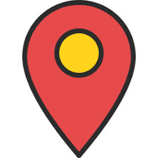

Capturing the joyful moments
@williamchan

__________________________________________
Chicago|LA|HONG KONG|PARIS
Portrait|Scenary|Still life|Advertisement
 Gear:Nikon D7200|Lighting included|Post edition included
Gear:Nikon D7200|Lighting included|Post edition included
Multi-vidicon filming | Live shooting
10-photo set: CNY 500
25-photo set: CNY 900
25-photo set: CNY 900
My name is John and I'm a 20 year old ametuer photographer. I've been at this for nearly 5 years now. However, for me, the same probably goes for most of you, that I've been playing with cameras since before I fully knew what they do! It's been kind of a hidden passion until the day I broke my Canon S2 IS and picked up a Rebel XT.
The Single Lens Reflex changed my world and instantly fell in love with it. So I upgraded from a used 350D to the nifty new 400D with the BG-E3 grip and picked up a few professional lenses. Currently I shoot with: EF 50mm F/1.8 MKI, EF 17-40mm F/4L, EF 24-70mm F2.8L, and EF 70-200mm F/4L with the Canon Speedlite 430EX. The newest addition to my collection is an EOS 3 with PB-E2 booster.
Mainly I do a lot of nature photography including A LOT of macro. I try to do wedding and event shots on the side for friends. I really just need the experience. I hope to turn it into a profession some day. I hope to go to Brookes Institute of Photography in California
Thought I would hop on board and see what tricks of the trade I could pick up and what skills I may obtain from all of you. I hope to stick around and have some fun here!
-John
You can also find me here: